← 返回阅读库 · 原论文目录
论文讲解阅读文档 · 表征学习 · v189
β-VAE Learning basic visual concepts with a constrained variational...
视频时长 00:12:49；讲解文字 5,704 字符；提取讲解画面 30 张。按视频原顺序阅读，每段文字保留时间戳。
文字来自整段视频的自动语音转写，按自然停顿分段，并与 PPT / 论文页面 / 演示画面对齐。未将讲解压缩为摘要；术语、数字和口述公式请结合画面及原论文核对。 阅读稿已校正规范部分明确术语误识别；原始逐字稿和每处修改记录另行保留。
讲解画面为源视频截图（640×360），不是可编辑 PPT 文件。全片按每秒 2 帧扫描内容变化，逐步展开页保留；连续动画保留代表画面。清晰度受源视频限制。
下载完整资料包 · 含离线 HTML、PDF、Word、全部 PPT 画面和字幕。
原论文与材料
beta-VAE: Learning Basic Visual Concepts with a Constrained Variational Framework · 下载完整 PDF（22 页）
按时间阅读
00:00:00–00:00:33 · 画面 001
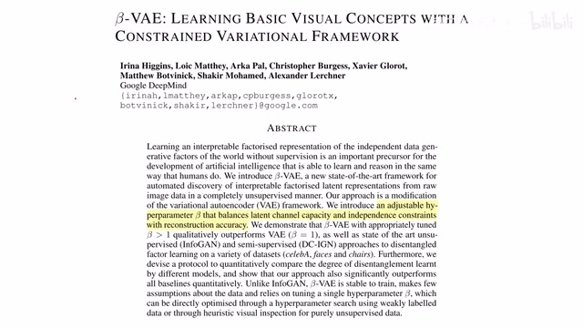
00:00:00–00:00:33 · 画面 001大家好,今天我们来快速说一篇论文 Beta-VAE Learning Basic Visual Concepts with a Constrained Variational Framework。那么因为这篇论文呢是这个 Modification of the Variational Autoencoder，也就是这个 VAE 的一种改版。那么如果你对 VAE 的数学原理不是特别熟悉呢，非常建议你先去观看我们之前介绍 VAE 的视频，那么然后呢我们再来看到这篇的工作。
那么当然这篇论文也是有一点年头了，我们讲它是因为我们后面需要借鉴它的一些方法 OK。那么我们首先来到最基础的概念，从 VAE 一直到 Auto Encoder 这一系列，它的网络结构都是一个沙漏型的结构。那么我们需要在中间的 Bottleneck 里面取得一个好的 Representation，或者叫 Latent Embedding，用它来方便我们的下游各个任务。那么怎么样才算是一个好的 Embedding 呢？
00:00:33–00:01:49 · 画面 002
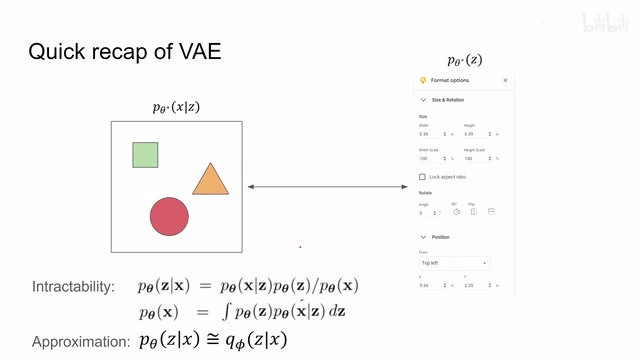
00:00:33–00:01:49 · 画面 002我们再次把这个例子拿出来。我们看到这幅图像里面有三个不同形状的物体，它们的形状不一样，颜色不一样，大小也不一样。那么对于人来说，我们能够一眼看出来像它内部的有一些参数，比如说大小参数，颜色参数，它们可以轻松控制这幅图的形态。比如说我通过很少的这个变样的数量，很少的自由度就可以对这个图形的形状进行完整的控制。那么我们期望呢就是我们的 encoder 能够通过这个图像来发现它背后其中最本质的东西，也就是说比如说这个位置啊，尺寸大小等等。而为了实现这个信息的提取和压缩呢，我们这个 autoencoder 它的任务呢就是做一个 reconstruction，就是做一个重建。那么只要过了 bottleneck 之后呢和我们之前输入的图像接近。
那么它肯定是效果就越好的。那么这个呢就是一个 autoencoder 的 nitration。那么下面我们来看回到这个 variational autoencoder VAE。那么关于 VAE 的这些数学推导呢，我们之前的视频里面已经介绍过了。那么我们直接看到下面这个式子。那左边呢是一个常数，这个 KL divergence 呢它是一个非负的。那么所以呢我们只要把这个 L 它所谓的 variational lower bound 把它提升起来，那么这个 KL divergence 呢它就会减小。
00:01:49–00:01:57 · 画面 003
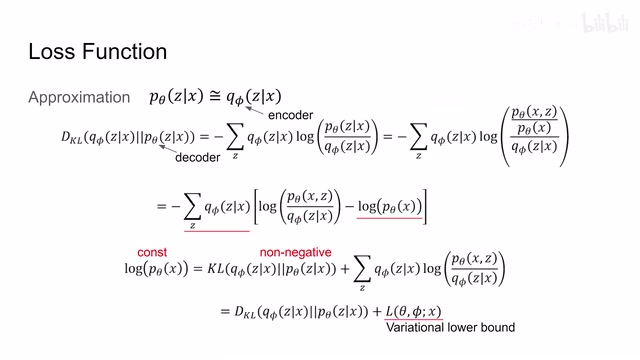
00:01:49–00:01:57 · 画面 00300:01:57–00:01:59 · 画面 004
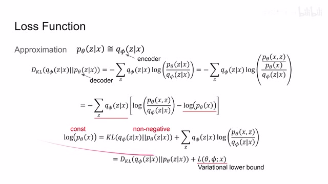
00:01:57–00:01:59 · 画面 00400:01:59–00:02:18 · 画面 005
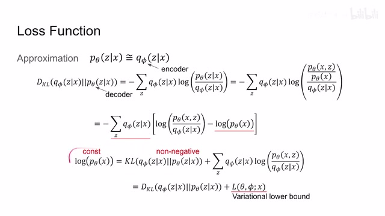
00:01:59–00:02:18 · 画面 005这样子呢就能达到让我们这个两个 distribution 它们相近这样的一个目的那么在 VAE 里面呢我们把这个 variational lower bound 呢给它打开那根据定义打开呢就是这个样子那么差分起来呢就是变成了这个 reconstruction loss 和这个 regularization loss 那么这里我们看到因为我们是要最大化这个 lower bound 然后呢左边呢是这个期望右边呢是一个负的 KL divergence
00:02:18–00:02:32 · 画面 006
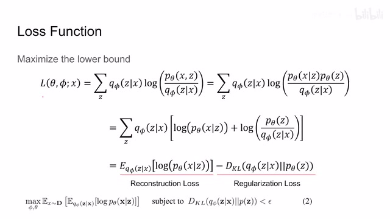
00:02:18–00:02:32 · 画面 00600:02:32–00:02:33 · 画面 007
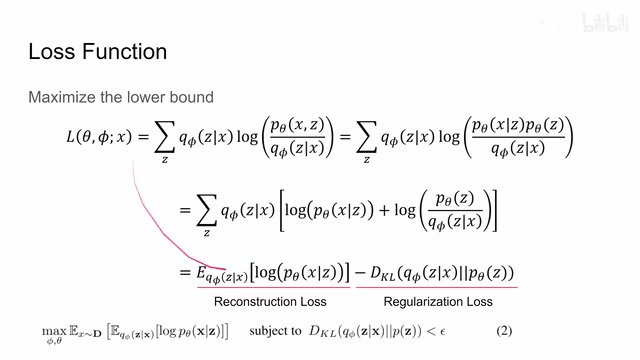
00:02:32–00:02:33 · 画面 00700:02:33–00:02:54 · 画面 008
00:02:33–00:02:54 · 画面 008那其实我如果要实现它的最大化的话，我只要让这个 KL divergence 让它变得尽量小，或者说小于一个阈值，然后呢左边这个项目呢尽量大，那就可以了。那么因此呢整个这个式子呢可以写成这样一个形式。那也就是说我只要最大化前面这一部分，而让我们后面这一部分的这个 KL divergence 呢小于一个阈值，哎那就可以了。那么该怎么样解这个式子呢，就是有条件的这样优化问题呢？
00:02:54–00:02:56 · 画面 009
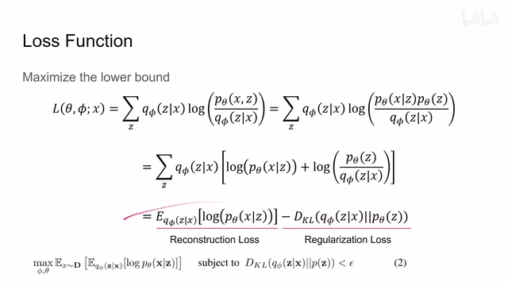
00:02:54–00:02:56 · 画面 00900:02:56–00:03:02 · 画面 010
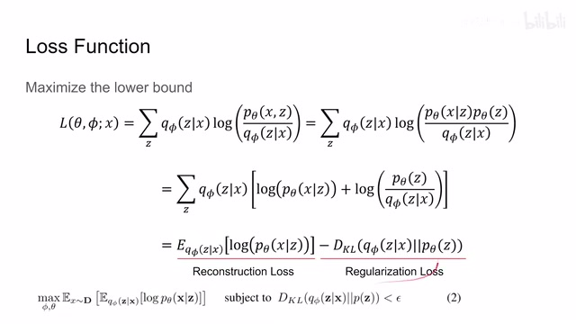
00:02:56–00:03:02 · 画面 01000:03:02–00:03:05 · 画面 011
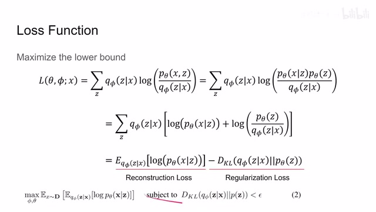
00:03:02–00:03:05 · 画面 011那这当然要请出我们老朋友拉格朗日了，对吧？在满足 KKT 条件的情况下呢，我们就把这个不等式给它乘上一个系数来，就放到我们需要优化的这个目标里面，它就变成了这样一个样子。那么记得我们在把这个不等式拿出来的时候呢，前面要乘上一个参数，这个β，那么它呢其实也就是本文的主角β为 1 里面的β。那么因为这个β和ε呢都是非负的，所以我们新转换出来的这个式子呢，
00:03:05–00:03:39 · 画面 012
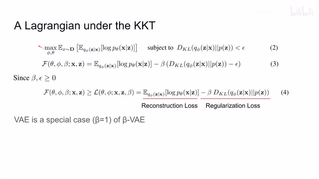
00:03:05–00:03:39 · 画面 012是不小于原来这个 lower bound 的，那么更确切的来说呢，我们把这个 beta 和这个 epsilon 它们两个相乘得到这个系数呢，因为它们两个乘出来是一个常数嘛，我们就可以把它直接拿掉。因此呢，我们需要优化的项目呢，就变成了这一项，这个 reconstruction loss 还有这个 regularization loss。但是与之前的 ve 不同的是呢，我们这里有一个 beta。那么很显然，当这个 beta 等于 1 的时候呢
00:03:39–00:03:45 · 画面 013
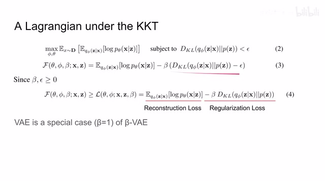
00:03:39–00:03:45 · 画面 01300:03:45–00:04:16 · 画面 014
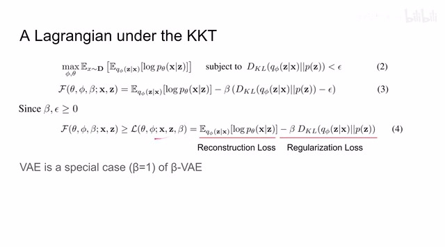
00:03:45–00:04:16 · 画面 014那么βVAE 呢，就退化成了这个 VAEVAE 呢是βVAE 的一种特殊情况。那么增加了这个β之后呢，给我们带来什么好处呢？首先非常直观来看，它就是一个 hyperparameter 来控制这个 reconstruction loss 还有 regularization loss 它们两个之间的这个权重。像 VAE 里面我们是没法控制它们两个之间的比例的，现在呢，我们终于有一种手段能够控制这两个 loss 它们之间的相互的占比。那么我们再仔细看到这个 regularization loss
00:04:16–00:04:17 · 画面 015
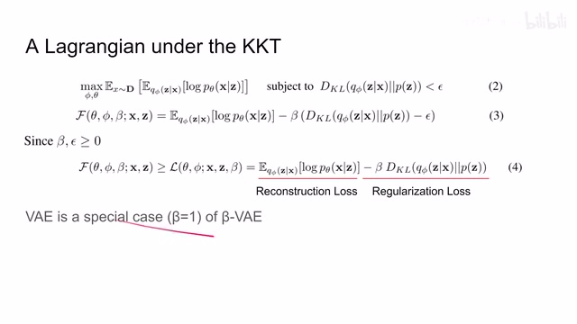
00:04:16–00:04:17 · 画面 01500:04:17–00:05:06 · 画面 016
00:04:17–00:05:06 · 画面 016它呢是把我们的 encoder 产生的这个 distribution 呢推向我们一个标准的比如说高斯 distribution。那么这也就意味着如果我们的 beta 增加呢，我们的 encoder 呢会提取出更加抽象的信息，而且呢因为我们的 z 里面它的各个元素之间是相互独立的，这也就鼓励我们的 encoder 呢提取出多个不相关的变量。那这个过程呢我们叫它 disentanglement，也就是解耦。那么如果我们 embedding 之中的各个变量，是相互独立的不耦合的，那么显然呢他们会对我们下游的任务比如说做分类啊做 regression 啊有更大的帮助，特别是你用它来做数据生成的时候呢就会更加符合直觉。那么因此呢我们评价这篇工作的手段呢就是需要找一个 disentanglement metric，用它呢来衡量我们 encoder 的输出它们的解耦呢是否彻底。
00:05:06–00:05:50 · 画面 017
00:05:06–00:05:50 · 画面 017那么如果解耦很彻底呢，我们就有更大的可能把我这个控制图像中这些元素的这些内在的这些变量给它全部都找出来，但是呢，这个时候有朋友注意到了，如果呢，我单纯只是想评价我一个状态变量里面它各个元素它们相互耦合相互独立的这么一个状态，那我直接上一个 PCA，上一个 ICA，那是不是就可以了呢？那么这个是必然，它们非常解耦的，从数学原理上就保证了它们互不相干。
这样的方法呢，固然是可行的，但是呢，你直接更改这些变量呢，它跟它实际上的内涵的比如说语义的信息呢是没有关系的。就像你一个数据集里面有好多列出来的样本，你做出一个 PCA 呢，它给你生成很多个这个方向的这个 vector，但是你要说每一个 PCA 是啥意思呢，这也说不清楚，没法解释。那么因此呢，这个方法是不行的。同理呢，如果我们只是单纯的使用这个 cross correlation
00:05:50–00:05:51 · 画面 018
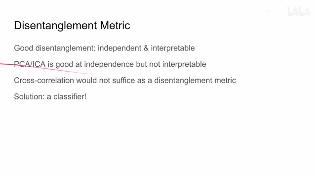
00:05:50–00:05:51 · 画面 01800:05:51–00:06:48 · 画面 019
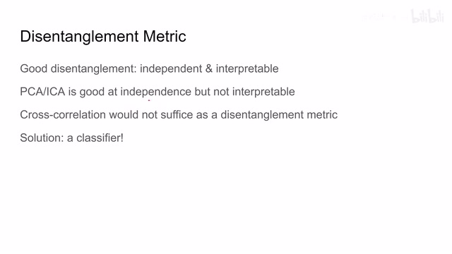
00:05:51–00:06:48 · 画面 019它嘛，就是用来衡量相关性的嘛，对吧？我们如果只是用它，可能你的 PCA 这些东西数据很好看，但是呢，它并不能对我们这个模型理解这个图像中的语义信息有帮助。那么因此呢，这里呢，作者提出了一个新的 metric，它呢，使用了一个非常简单的这个 linear classifier。但是所以要保持这个 classifier 非常简单呢，就是因为它不希望我们的 classifier 里面记住更多额外的信息来帮助我们的模型有点作弊的感觉啊那么下面我们直接来看作者是怎么做的，假设我们这里有 4 个变量来控制我们生成图像的各个变化，中间这个图形它的 X 位置 Y 位置它的尺度还有它的旋转，当然你可以包括里面的图形的形状等等这些变量，通过这些变量来控制我们图像里面的信息，那么每次测试的时候我们在这些变量中选择一个变量
00:06:48–00:06:59 · 画面 020
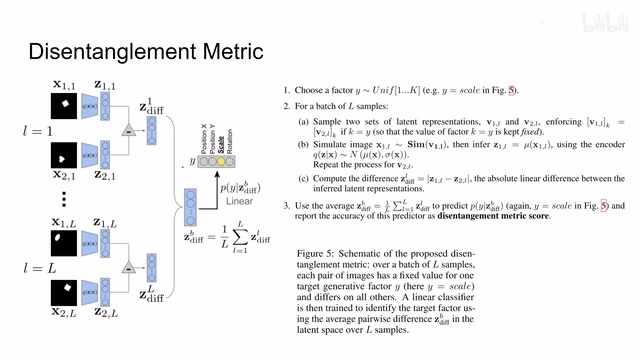
00:06:48–00:06:59 · 画面 02000:06:59–00:07:00 · 画面 021
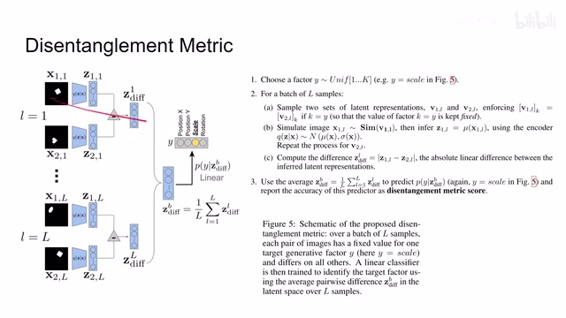
00:06:59–00:07:00 · 画面 02100:07:00–00:09:00 · 画面 022
00:07:00–00:09:00 · 画面 022比如说呢，我们这里呢选了 scale，也就是尺度的信息。那么下面呢，我们开始测试对一个 batch 呢，假如它有 L 个样本，我们呢先生成两组参数。那这两组参数呢，比如说就是像 Y 这样的对吧，它里面包含这个 position xposition yscale 还有 rotation 等等巴拉巴拉这些东西。但是呢，这两组参数呢存在一个联系，那就是它们的这个 scale 选中的这个尺度它们呢是保持不变的。
也就是说呢，我会产生很多的随机的 vector。我们叫它 V这个 V 里面的某一个元素。我们呢是保证在这些所有的样本中呢都是不变的。那么根据这样的 V 呢。我们放到我们的 simulator 里面。我们来产生我们的这些图像。叫 X 嘛这个呢就是我们用来测试的这个图像。然后呢把这些测试的图像。放到我们真正需要测试的这个目标里面。
也就是放到我们的 encoder 里面。就是那么我们的 encoder 呢，就会把我们的这个模拟图像。变成它对应的这个 latent representation。那这个 latent representation就是我们解出来的。我们 ve 里面中间的那个 bottleneck。然后呢这里呢我们做一个差。就是这两个图像因为它们的内在的这个参数呢。
只有这个 scale 是相同的。其他是不同的因此呢我们把这两个 latent representation 呢。给它做差那么按说如果我的 disentanglement。做得好的话那我这个 latent representation 里面应该就有一个变量。来描述这个 scale而这个 scale 呢因为这两幅图像它的 scale 是不变的所以说呢我做差了之后呢基于这个差我的这个 classifier应该能够轻松的把我这个不变的这个 scale，给它找出来那么继续来看呢这里呢就是两两做差。
两两做差得到 L 个不同样本的。
00:09:00–00:09:38 · 画面 023
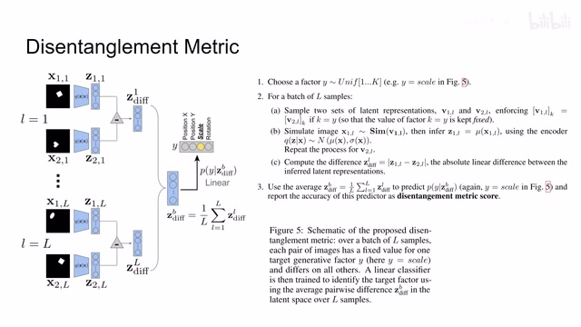
00:09:00–00:09:38 · 画面 023这个 vector 它的差然后呢把这些所有的 vector 呢取一个平均得到这个谢谢那么就是我们刚才所说的，如果它的 disentanglement 做的足够好的话，那么它们随着做差总有一个 element 它就对应这个 scale，它呢是保持不变的。然后呢包括你平均 L 个样本呢，就是尽可能的让其他的这些元素呢变化变化变化。那这样子呢你把这个平均后的这个 vector 呢送到我们的 linear classifier 里面，让它呢去预测啊我这些 elements 里面到底哪一个是没有变的。
然后根据这个 classifier 它的准确率呢来判断我们的 disentanglement 做的是否恰当，那这个呢是一个很巧妙的设计，下游任务的这样一个思路。那这种思路呢，在我们没法直接的评价这个 representation 它的质量的时候呢，其实是非常常见的。你像我们在 GAN 里面用到的 FID 啊，IS 啊，在一个非常宏观的角度来看，跟它的思路呢是一致的。
00:09:38–00:09:39 · 画面 024
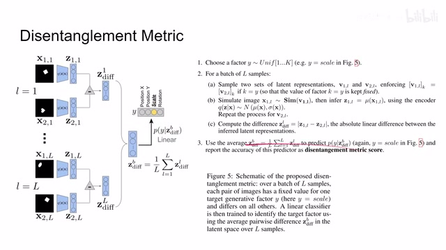
00:09:38–00:09:39 · 画面 02400:09:39–00:10:10 · 画面 025
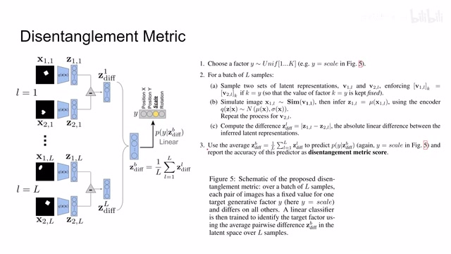
00:09:39–00:10:10 · 画面 025虽然他们的技术细节差得太远了，而且根本用的就不是一个场合啊，但是呢重点我们看的是这个思路。那么有了这个 disentanglement metric score 呢，我们就来看看作者帮我们发现了哪些东西吧。那首先呢对比了之前这些方法，那么我们可以看到呢，像这个 PCA 和这个 ICA 虽然能够给我们带来很好的 independence，也就是我们的 latent vector 里面的各个的 element 他们是相互独立的，但是呢他们并不能反映我们实际的语义信息，这个呢是不太好的。
00:10:10–00:10:34 · 画面 026
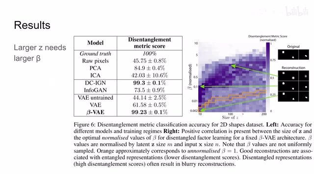
00:10:10–00:10:34 · 画面 026那么这里呢我们可以看到呢，作者还来帮我们做了一个搜索。那这里呢作者发现随着 Z 的尺寸的增加呢，我们需要更强的β呢来对这个数进行约束，这也是个很合理的挺符合直觉的这么一个观察。但是呢同时呢作者这里也发现了随着我们的 disentanglement 它的增强呢，我们的这个 reconstruction 它的重建的效果变得越来越差了。那么当然它呢也是一个挺符合直觉的这么一个现象。
00:10:34–00:10:35 · 画面 027
00:10:34–00:10:35 · 画面 02700:10:35–00:10:54 · 画面 028
00:10:35–00:10:54 · 画面 02800:10:54–00:12:49 · 画面 029
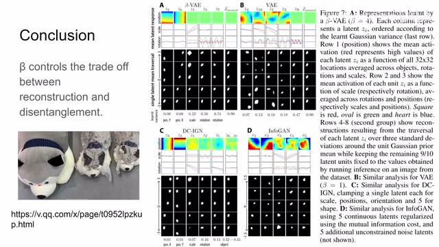
00:10:54–00:12:49 · 画面 029比如说这里有一个保守玩具对吧，你把它抽成真空，它的体积虽然变小了很多，但是呢它就变形了。那你如果抽的体积越小，它变形的程度就越厉害，你就不能指望它在复原的时候还能像保持成原来这样，它肯定呢时间放长它才有个准儿对吧。也就是说呢，它的重建的效果不一定好，但是呢它确实节约了大量的体积，在本文的场合中呢就是 disentanglement 的做得很好。
对于我们下的任务呢其实可能呢效果更好所以从这个观察中呢我们也知道我们 reconstruction 呢它作为一个辅助的任务来帮助我们学到一个好的 representation 当然这是 ok 的但是呢在真正使用这个 representation 的场合呢我们又不是说刻意的要追求完美的这个 reconstruction 那如果说我们追求这种完美的非常细节的保留呢那它可能呢反而会伤害我们之前的这个 representation learning所以说呢这个 reconstruction 呢要有度，那么这里呢作者通过一系列 visualization 呢来帮我们来直观理解这个 disentanglement。我们可以看到在 beta-VAE 里面他提出的这些 elements 里面，那么他有一个呢就正好来控制这个 y 他的位置，那么另一个变量呢控制的是这个 x 轴的位置，有一个呢控制的是这个形状，而剩下呢还控制的旋转等等。你想你的 encoder 能够学出这种东西来，那其实也是挺了不起的一个事情。
那对比呢像这个 DC-IGN，它在这个 sy 这个位置上呢学的是 ok 的，其他的这些东西呢就差点意思。那像这边呢这个就更不用说了。那么总的来说呢，这篇在 vae 的基础上呢做了一个非常微小的改动，重点研究了 disentanglement 这一块，对我们后续的这个 representation learning 呢是有一定启发的。那如果你对这篇论文感兴趣呢，非常推荐你去原文中查看它的各种技术细节。那么以上呢就是我对这篇论文的一个非常简单的分析。
感谢您的收看再见
00:12:49–00:12:49 · 画面 030
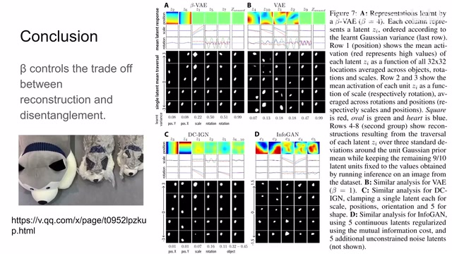
00:12:49–00:12:49 · 画面 030转写与来源说明 · 2 个自动复核提示
保留 76 个原始语音片段，2 个片段触发自动复核提示。提示仅用于定位可能的术语、重复或识别问题，不等于已确认错误。
讲解画面为源视频截图（640×360），不是可编辑 PPT 文件。全片按每秒 2 帧扫描内容变化，逐步展开页保留；连续动画保留代表画面。清晰度受源视频限制。
原视频：paper/合集_2026-10-16_表征学习/[论文简析]β-VAE Learning basic visual concepts with a constrained variational....mp4
SHA-256：6319afb00705138d8573f85035411271a787fd6ba590f250a0da46a48134b7b6
那这个 latent representation
谢谢
全文按视频语音与画面制作。原论文可从上方链接下载；完整资料包保留全文、原始逐字稿、字幕和校对记录。